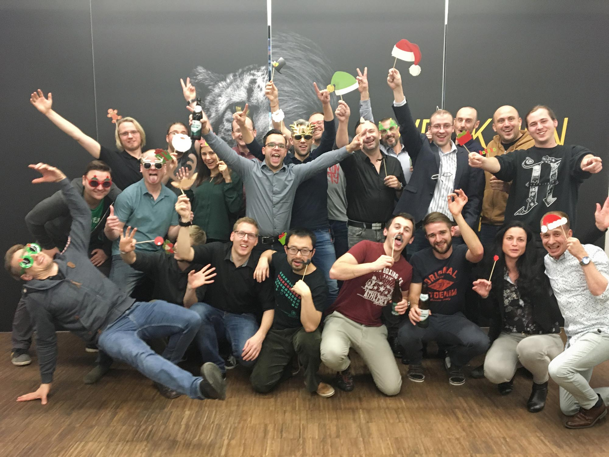
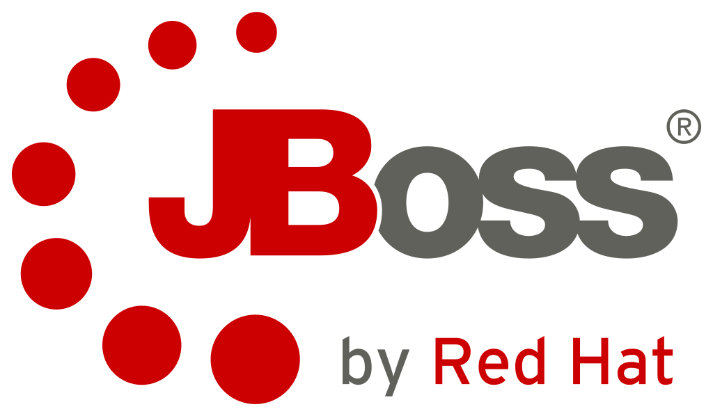
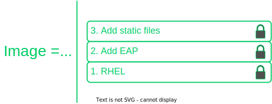

# Comments begin with the pound sign
FROM ubuntu:16.04
RUN apt-get update && apt-get install -y wget
ADD /data /myapp/dataTraining Containerization
Gepardec who?
That’s us
office: vienna / linz
size: ~ 40 people
we do what we love..
custom software solution
cloud transformation
devOps automation

|
 |
How we teach
Gepardec believes in learning by doing
The training is lab driven
Work together!
Ask questions at any time
Session Logistics
2 days duration
Mostly exercises
Regular breaks
Assumed knowledge and requirements
Fmailiarity with Bash or Powershell
Bash Cheat sheet http://bit.ly/2mTQr8l
Your lab environment
You have been given an instance for use in the exercises
Ask the instructor for the credentials if you don’t have them already
Training learning objectives
By the end of this training, trainess will be able to
Asses the advantages of a containerized software development & deployment
Use container engine features necessary for running containerized applications
Virtualization vs Containerization
What we want
Ideal software should
be modular and flexible (DEVs)
be easy to migrate (DEVOPS)
be easy to scale, monitor and lifecycle (OPS)
mitigate vulnerabilities (Security)
and run cheap (business)
Virtualization
Containerization
Rapid development
Containers can be removed and replaced with a minimum of impact on their neighbors, increasing developer choice and speed.
Smooth migration
Containers carry their environment and dependencies with them, simplifying and minimizing requirements on the hosts that run them.
Simple sclae & mainenance
Containers have private system resources, so a compromise in one does not affect the rest.
Secure by default
Containers have private system resources, so a compromise in one does not affect the rest.
Application density
Containers save datacenter costs by running many more application instances than virtual machines can on the same physical hosts.
Containerization basics
Discussion running containers
What assurances would you need to run a process on an arbitrary host? Consider
Hostile environments
Required resources
Learning objectives
By the end of this module, trainees will be able to
Describe what a container is in terms of processes and isolation tools
Use the key commands for interacting with Docker containers
Containers are processes
Containers are processes sandboxed by
Kernel namespaces
Control Groups
Root priviledge management & syscall restrictions (Linux)
VM isolation (Windows)
Linux kernel namespaces
DEFAULT
Process IDs
Network stacks
inter-process communications
Mount points
Hostnames
OPTIONAL
User IDs
Linux PID kernel namespace
Optional Linux isolation features
Control groups: limit memory & CPU
Root priviledge management: acceptlist root powers
System call management: acceptlist available system calls
Linux Security Modules: mandatory filesystem access control
 Instructor demo: Process isolation
Instructor demo: Process isolation
See the demo
Process isolation
in the exercise book
Exercise: Container Basics
Work through
Running and inspecting a container
Interactive containers
Detached containers and Logging
Starting, stopping, inspecting and deleting cotnainers
In the exercise book.
Container lifecycle
Container logs
STOUD and STERR for a container process
docker container logs <container_name>
Container basics takeaways
Single process constrained by kernel namespaces, control groups and other Linux technologies
Private & ephemeral filesystem and data
Further reading
List of container commands: http://dockr.ly/2iLBV2I
Getting started with containers: http://dockr.ly/2gmxKWB
Start containers automatically: http://dockr.ly/2xB8sMl
Limit a container’s resources: http://dockr.ly/2wqN5Nn
Isolate containers with a user namespace: http://dockr.ly/2gmyKdf
Keep containers alive during daemon downtime: http://dockr.ly/2emLwb5
Intro to Windows Containers: https://dockr.ly/2CTYhYb
Container images
Discussion: provisioning filesystems
What are some potential difficulties with provisioning entire filesystems for containers?
How can we avoid these problems?
Learning objectives
By the end of this module, trainess will be able to
Create container images via several methods
Describe the filesystem structure underlying a container image
Understand the performance implications of different container image design decisions
Correctly tag and namespace container images for distribution via a registry
What are container images?
A filesystem for container processes
Made of a stack of immutable layers
Start with a base image
New layer for each change

Sharing layers
The writable container layer
Images: Copy on write

Linux Containers: Union FS

Creating images
Three methods:
Commit the R/W container layer as a new R/O container image layer.
Define layers to add to a existing container image in a Containerfile.
Import a traball into as a standalone base image.
Commiting container changes
docker container commitsaves the container layer as a new R/O container image layerPro: build container images interactively
Con: hard to reproduce or audit; avoid this in pratice
Containerfiles
Content manifest
Provides container image layer documentation
Enable automation (CI/CD)
FROM command defines the base image
Each subsequent command adds a layer of metadata
docker image build …builds container image Containerfile
Instructor demo: Creating images
See the demo
Creating images
in the exercise book.
Exercise: Creating images
Work through
Interactive Image Creation
Creating Images with Dockerfiles (1/2)
in the exercise book.
Build cache

After completion, the resulting container images layer is labeled with a hash of the content of all current image layer in the stack.
CMD and ENTRYPOINT
Recall all container run a process as their PID 1
CMD and ENTRYPOINT allow us to specify default processes
CMD alone: default command ans list of parameters.
CMD & ENTRYPOINT provides command, CMD provides default parameters.
CMD overridden by command argument to
docker container runENTRYPOINT overriden via
--entrypointflag todocker container run.
Shell vs Exec format
# Shell form
CMD sudo -u ${USER} java ...
# Exec form
CMD ["sudo", "-u", "jdoe", "java", ...] Exercise: Containerfiles (2/2)
Work through
Creating Images with Dockerfiles (2/2)
in the exercise book.
COPY and ADD commands
COPY copies files from build context to container image
COPY <src> <dest>ADD can also untar* or fetch URLs.
* Linux containers only!
create checksum for files added
log checksum in build cache
cache invalidated if checksum changed
Containerfile command roundup
FROM: base image to start fron (usually OS)
RUN: run a command in the environment defined so far
CMD & ENTRYPOINT: define default behaviour
COPY & ADD: copy files into container
Many more Containerfile commands are available; see the docs at https://docs.docker.com/engine/reference/builder/
Advanced Containerfile construction
How can we build container images that are
Lighweight
Secure
Minimal build times
The scratch container image
An "empty" image
Can’t be pulled
Doesn’t create a layer
Used for building container image not based on any pre-existing container image
Linux only
FROM scratch
ADD centos-7-docker.tar.xz /
LABEL org.label-schema.schema-version="1.0" \
org.label-schema.name="CentOS Base Image" \
org.label-schema.vendor="CentOS" \
org.label-schema.license="GPLv2" \
org.label-schema.build-date="20181205"
CMD ["/bin/bash"]Multi-Stage builds (1/2)
Hello worls, in C:
FROM alpine:3.5
RUN apk update && \
apk add --update alpine-sdk
RUN mkdir /app
WORKDIR /app
ADD hello.c /app
RUN mkdir bin
RUN gcc -Wall hello.c -o bin/hello
CMD /app/bin/helloBuilds to:
$ docker image ls hwc
REPOSITORY TAG IMAGE ID CREATED SIZE
hwc latest 142c29686b6a 15 hours ago 184 MBMulti-Stage builds (2/2)
Hello worls, in C:
# Full SDK version (built and discarded)
FROM alpine:3.5 AS build
RUN apk update && \
apk add --update alpine-sdk
RUN mkdir /app
WORKDIR /app
ADD hello.c /app
RUN mkdir bin
RUN gcc -Wall hello.c -o bin/hello
# Lightweight image returned as final product
FROM alpine:3.5
COPY --from=build /app/bin/hello /app/hello
CMD /app/helloBuilds to:
$ docker image ls hwc
REPOSITORY TAG IMAGE ID CREATED SIZE
hwc latest 5d925cfc9c96 39 seconds ago 4MBBuild target
Containerfile
FROM <base image> as base
...
FROM <foo image> as foo
...
FROM <bar image> as bar
...
FROM alpine:3.4
...
COPY --from foo ...
COPY --from bar ...
...building the container image
docker image build --tag <name> …
Exercise: Multi-Stage Builds
Work through
Multi-Stage Builds
in the exercise book.
Container image construction best practices
Start with an official container image
Use multi-stage builds to drop compilers, SDKs, …
More layers leverage the cache
…but fewer layers perform better
Development: More layers
Bad caching:
FROM python:3.5-alpine
RUN mkdir /app
COPY /mypy /app/
RUN pip install -r app/reqs.txt
...Good caching:
FROM python:3.5-alpine
RUN mkdir /app
COPY /mypy/reqs.txt /app/
RUN pip install -r app/reqs.txt
COPY /mypy /app/
...Production: Less layers
To collapse ALL image layer:
$ docker container run -d --name demo mytallimage:1.0
$ docker container export demo > image.tar
$ cat image.tar | docker image import - myflatimage:1.0Or build with
--squashflag (experimental): compress all non-base-layersUse
container export --squashfor one shareable base layer & one application layer
Best practices: Patching & Updates

Container Image tags
Optional string after image name, separated by
::latestby defaultSame image with two tags share same ID, image layer:
$ docker image ls centos*
REPOSITORY TAG IMAGE ID CREATED SIZE
centos 7 8140d0c64310 7 days ago 193 MB
$ docker image tag centos:7 centos:mytag
$ docker image ls centos*
REPOSITORY TAG IMAGE ID CREATED SIZE
centos 7 8140d0c64310 7 days ago 193 MB
centos mytag 8140d0c64310 7 days ago 193 MBContainer Image namespaces
Container images exist in one of three namespaces:
Root (ubuntu, nginx, mongo, mysql,…)
User / Org (jdoe/myapp:1.1, microsoft/nanoserver:latest,…)
Registry (FQDN/jdoe/myapp:1.1)
Image tagging & namespacing
Tag on build:
docker image build -t myapp:1.0 .Retag an exisitng image:
docker image tag myapp:1.0 me/myapp:2.0Note
docker image tagcan set both tag and namespaceNames and tags are just pointers to container image ID
Container Image ID corresponds to immutable content addressable storage
Sharing container images
Docker HUB
Provides certified commercial and free software distributed as Docker Images
Shares community-generated container images and content
Exercise: Managing container images
Work through
Managing Images
in the exercise book.
Container Image Creation takeaways
Container images are built out of R/O layers.
Containerfiles specify container image layer contents
Key Containerfile commands: FROM, RUN, COPY and ENTRYPOINT
Container images must be namepsaced accoriding to where you intend on sharing them
Further reading
Best practices for writing Dockerfiles: http://dockr.ly/22WiJiOlink:
Use multi-stage builds: http://dockr.ly/2ewcUY3
More about images, containers, and storage drivers: http://dockr.ly/1TuWndC
Details on image layering: https://bit.ly/2AHX7iW
Graphdriver plugins: http://dockr.ly/2eIVCab
Docker Reference: An Intro to Storage Solutions for Docker CaaS: http://dockr.ly/2x8sBw2
How to select a storage driver: http://dockr.ly/2eDu8yO
Use the AUFS storage driver: http://dockr.ly/2jVc1Zz
User guided caching in Docker: http://dockr.ly/2xKafPf
Container Volumes
Discussion: Managing data
If a container generates at lot of data, where should it be stored?
What if you need to provision data to a container?
Learning objectives
By the end of this module, trainees will be able to
Define a volume and identify its primary use cases
Describe advantages and potential secuity risks of mounting volumes and host directories
Volume usecases
Volumes provide a R/W path separate from the layered filesystem.
Mount data at container startup
Persist data when a container is deleted
Share data between containers
Speed up I/O by circumventing the union filesystem
Basic volumes
Named: managed by Docker; filesystem independent; user-specified identifier
Anonymous: managed by Docker; filesystem independent; randomly-generated identifier
Host mounted: mount a specific path on the host; DIY management
Instructor demo: Volumes
See the demo
Basic Volume Usage
in the exercise book.
Volumes in Containerfile
VOLUME instructions creates a mount point
Can specify arguments in a JSON array or string
Cannot map volumes to host directories
Volumes are initialized when the container is executed
FROM nginx:latest
...
# string example
VOLUME /myvolume
# string example with multiple volumes
VOLUME /www/website1 /www/website2
# JSON example
VOLUME ["myvol1", "myvol2"]
...Volumes and security
Point of ingress to the host and other containers
Don’t mount things unnecessarily
Use the :ro flag whenever possible
Linu: in-memory tmpfs mounts available
Exercise: Volumes usecases
Work through
Database Volumes
in the exercise book.
Container volumes takeaways
Volumes persist data beyond the container lifecycle
Volumes bypass the copy-ob-write system (better for write-heavy containers)
Further reading
How to use volumes: http://dockr.ly/2vRZBDG
Troubleshoot volume errors: http://dockr.ly/2vyjvbP
Docker volume reference: http://dockr.ly/2ewrlew
Docker system commands
Learning objectives
By the end of this module, trainees will be able to
Execut cleanup commands
Locate Docker system information
Cleanup commands
$ docker system df
TYPE TOTAL ACTIVE SIZE RECLAIMABLE
Images 39 2 9.01 GB 7.269 GB (80%)
Containers 2 2 69.36 MB 0 Bdocker system prune
more limited…
docker image prune [--filter "foo=bar"]docker container prune [--filter "foo=bar"]docker volume prune [--filter "foo=bar"]docker network prune [--filter "foo=bar"]
Inspect the system
$ docker system info
Containers: 2
Running: 2
Paused: 0
Stopped: 0
Images: 105
Server Version: 17.03.0-ee
Storage Driver: overlay2
Backing Filesystem: extfs
Supports d_type: true
Native Overlay Diff: true
Logging Driver: json-file
Cgroup Driver: cgroupfs
Plugins:
Volume: local
Network: bridge host ipvlan macvlan null overlay
Swarm: active
NodeID: ybmqksh6fm627armruq0e8id1
Is Manager: true
ClusterID: 2rbf1dv6t5ntro2fxbry6ikr3
Managers: 1
Nodes: 1
Orchestration:
Task History Retention Limit: 5
Raft:
Snapshot Interval: 10000
Number of Old Snapshots to Retain: 0
Heartbeat Tick: 1System events
$ docker system events
2017-01-25T16:57:48.553596179-06:00 container create 30eb630790d44052f26c1081...
2017-01-25T16:57:48.556718161-06:00 container attach 30eb630790d44052f26c1081...
2017-01-25T16:57:48.698190608-06:00 network connect de1b2b40f522e69318847ada3...
2017-01-25T16:57:49.062631155-06:00 container start 30eb630790d44052f26c1081d...
2017-01-25T16:57:49.164526268-06:00 container die 30eb630790d44052f26c1081dbf...
2017-01-25T16:57:49.613422740-06:00 network disconnect de1b2b40f522e69318847a...
2017-01-25T16:57:49.815845051-06:00 container destroy 30eb630790d44052f26c108...Generates events with docker container run --rm apline echo 'Hello world'
Exercise: System commands
Work through
Cleaning up Docker resources
Inspecting Commands
in the exercise book.
Discussion
What is the origin of dangling container image layers?
What are potential pitfalls automating system cleanup, and how can we avoid them?
Questions?
Further reading
System commands reference: http://dockr.ly/2eMR53i
Containerization fundementals conclusion: Any app, anywhere
Containers are isolated processes
Container images provide filesystem for containers
Volumes persist data
Wrap up - Quarkus Hello-world
Exercise instructions
Goal: Build a docker image that runs a Java application
Find the fat jar
hello-world-<version>-runner.jarin the zip you downloadedRun the application with
java –jar hello-world-<version>-runner.jar.Try it out via http://localhost:8080/
Considerations:
What container image is suitable?
Do you need CMD, or ENTRYPOINT, or maybe both?
If you run two containers, what do need to take care of?
Solution
Sample Containerfile
FROM anapsix/alpine-java
LABEL MAINTAINER=thomas.herzo@gepardec.com
WORKDIR /data
EXPOSE 8080
COPY build/libs/hello-world-<version>-runner.jar hello-world-<version>-runner.jar
CMD ["-jar", "hello-world-<version>-runner.jar"]
ENTRYPOINT ["java"]Solution commands
docker build -t hello_world .docker run -d -p 8080:8080 hello_world
Container networking basics
Disciussion: Portable networks
Network traffic must by efinition traverse a network outside its origination container.
How can we make inter-container communication as portable and secure as containers themselves?
Learning objectives
By the end of this module, trainees will be able to
Describe Docker’s container network model and its security implications
Describe the basic technologies that underwrite single host networks
Understand how Docker manipulates a host’s firewall rules to control container traffic
The container network model
Linux: Default single-host network
Linux: Default container networking
Quiz: identify the sandbox, endpoint and network corresponding to the container networking model objects in this diagram.
Linux: User-defined bridges & firewalls
Exposing container ports
Containers have no public IP address by default.
Can forward host port → container port
Mapping created manually or automatically.
Port mappings visible via
docker container lsordocker container port
Instructor demo: Single host networks
See the demo
Single host netowrks
in the exercise book.
Exercise: Single host networks
Work through
Introduction to Container Networking
Container Port Mapping
in the exercise book.
Container networking takeaways
Single host networks follow the container networking model:
Sandbox: Network namespaces
Endpoint: veth (linux)
Network: bridge (linux)
Containers resolve each other by DNS lookup when named and attached to custom networks
Docker software defined networks are firewalled from each other by default
Further reading
Docker Reference: Designing Scalable, Portable Container Networks: https://dockr.ly/2q3O8jq
Network containers: http://dockr.ly/2x1BYgW
Docker container networking: http://dockr.ly/1QnT6y8
Understand container communication: http://dockr.ly/2iSrHO0
Introduction to container compose
Discussion: Processes vs. applications
Containers and images describe individual processes.
What will we need to describe entire applications?
Learning objectives
By the end of this module, trainees will be able to
Design scalable Docker services
Leverage Docker’s built in service discovery mechanism
Write a compose file describing an application
Distributed application architecture
Applications consisting of one or more containers across one or more nodes
Docker Compose facilitates multi-container design on a single node
Container services
Goal: declare and (re)configure many similar containers all at once
Goal: scale apps by adding containers seamlessly
A service defines the desired state of a group of identically configured containers
Docker provides transparent service discovery for Services
Service discovery
Services are assigned a Virtual IP which spreads traffic out across the underlying container automatically.
Our application: Dockercoins
(DockerCoins 2016 logo courtesy of @XtlCnslt and @ndeloof. Thanks!)
It is a Dockercoin miner!
💰🐳📦🚢
with 5 services:
Instructor demo: Docker-Compose
See the demo
Docker Compose
in the exercise book.
Exercise: Compose apps
Work through
Starting a Compose App
Scaling s Compose App
in the exercise book.
Container Compose takeaways
Docker Compose makes single node orchestration easy
Compose services makes scaling applications easy
Bottleneck identification important
Syntactically: docker-compose.yml + API
Further reading
Docker compose examples: http://dockr.ly/1FL2VQ6
Overview of docker-compose CLI: http://dockr.ly/2wtQlZT
docker-compose.yaml reference: http://dockr.ly/2iHUpeX
Docker Compose and Windows: http://bit.ly/2watrqk
Wrapup Dontainer Compose - Sonarqube
Sonarqube

Exercise: Instructions
Setup a Sonarqube server that listens on port 9000
Connect it to a persistent database
Use postgresql and persist it‘s data on the host filesystem using volumes
Verify that the data is persistent (create user and delete the container)
Check that Sonarqube is really using your postgresql database
Hint: use docker-compose
Solution
version: "2"
services:
sonarqube:
image: sonarqube
ports:
- "9000:9000"
networks:
- sonarnet
environment:
- SONARQUBE_JDBC_URL=jdbc:postgresql://db:5432/sonar
volumes:
- sonarqube_conf:/opt/sonarqube/conf
- sonarqube_data:/opt/sonarqube/data
- sonarqube_extensions:/opt/sonarqube/extensions
- sonarqube_bundled-plugins:/opt/sonarqube/lib/bundled-plugins
db:
image: postgres
networks:
- sonarnet
environment:
- POSTGRES_USER=sonar
- POSTGRES_PASSWORD=sonar
volumes:
- postgresql:/var/lib/postgresql
- postgresql_data:/var/lib/postgresql/datanetworks
sonarnet:
driver: bridge
volumes:
sonarqube_conf:
sonarqube_data:
sonarqube_extensions:
sonarqube_bundled-plugins:
postgresql:
postgresql_data:Containerization Training
Please take our feedback survey
Get in touch: office@gepardec.com
#WECKDENGEPARDENINDIR